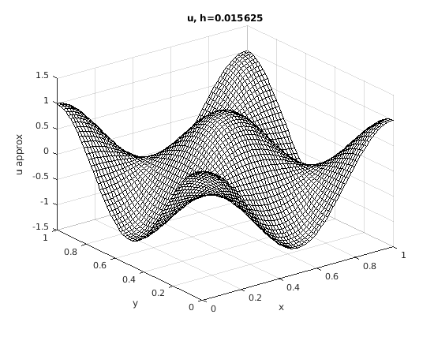
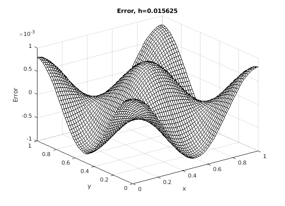

m=(2^6)-1;
a=0;b=1;
h=(b-a)/(m+1);
pfun=@(x,y) -8*(pi^2)*(cos(2*pi*x)).*(cos(2*pi*y));
[u,x,y]=fd2poissondct(pfun,a,b,m);
figure, set(gcf,'DefaultAxesFontSize',8,'PaperPosition', [0 0 3.5 3.5]),
mesh(x,y,u), colormap([0 0 0]),xlabel('x'),ylabel('y'),
zlabel('u_ approx'), title(strcat('u, h=',num2str(h)));
uex=@(x,y) (cos(2*pi*x)).*(cos(2*pi*y));
ue=uex(x,y);
error = (u-ue);
figure, set(gcf,'DefaultAxesFontSize',8,'PaperPosition', [0 0 3.5 3.5]),
mesh(x,y,error), colormap([0 0 0]),xlabel('x'),ylabel('y'),
zlabel('Error'), title(strcat('Error, h=',num2str(h)));
k1 = zeros(7,1);
h1=zeros(7,1);
L2=zeros(7,1);
m1=zeros(7,1);
for k = 4:10
k1(k-3) = k;
m1(k-3) = (2^k) - 1;
m = (2^k) - 1;
h1(k-3) = (b-a)/(m+1);
h = (b-a)/(m+1);
[x1,y1] = meshgrid(a:h:b);
[u,x1,y1] = fd2poissondct(pfun,a,b,m);
ue = uex(x1,y1);
error = u - uex(x1,y1);
L2(k-3) = R2Norm(error,ue);
end
T = table(k1(:),m1(:),h1(:),L2(:), 'VariableNames',{'k','m','h','R2-norm'})
fprintf('Its clear from the table that as m increases due to increasing k, \n h decreases, and the value of the relative 2-norm significantly decreases as m grows big. \n Hence the big the m, the faster the solution converges to the true solution.\n');
p=polyfit(log(h1),log(L2),1);
p
fprintf('Since the order of convergence,p, is 2.0014, which is approximately 2, \n hence the method is second order accurate.\n')
function L2 = R2Norm(error, uexact)
R = error .^2;
u_ex = uexact.^2;
L2 = sqrt(sum(R,'all')/sum(u_ex,'all'));
end
T =
7×4 table
k m h R2-norm
__ ____ __________ __________
4 15 0.0625 0.012951
5 31 0.03125 0.003219
6 63 0.015625 0.00080358
7 127 0.0078125 0.00020082
8 255 0.0039062 5.0201e-05
9 511 0.0019531 1.255e-05
10 1023 0.00097656 3.1375e-06
Its clear from the table that as m increases due to increasing k,
h decreases, and the value of the relative 2-norm significantly decreases as m grows big.
Hence the big the m, the faster the solution converges to the true solution.
p =
2.0014 1.1992
Since the order of convergence,p, is 2.0014, which is approximately 2,
hence the method is second order accurate.
 